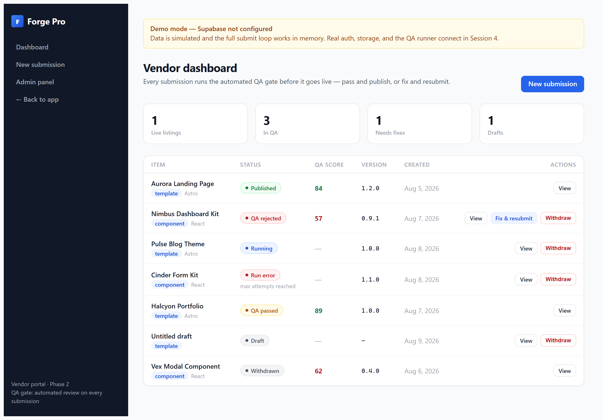
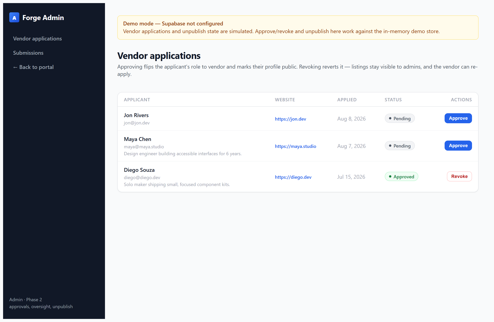
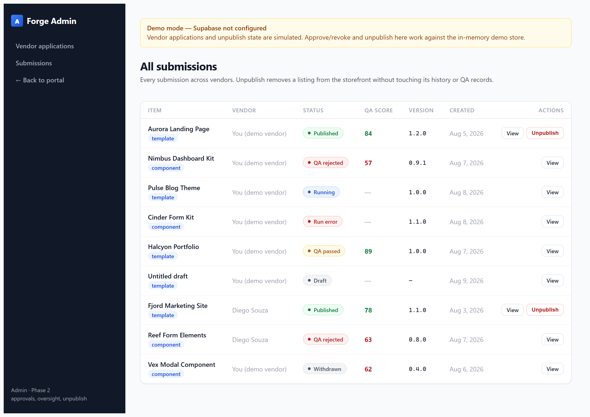
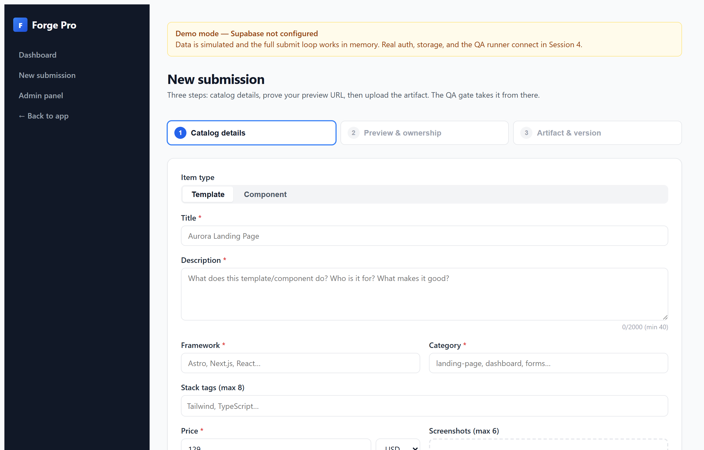
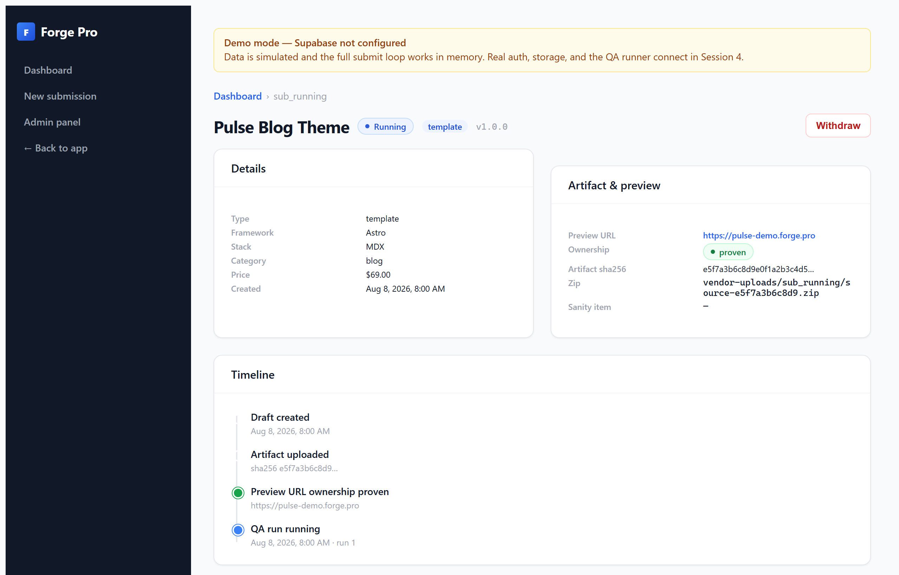
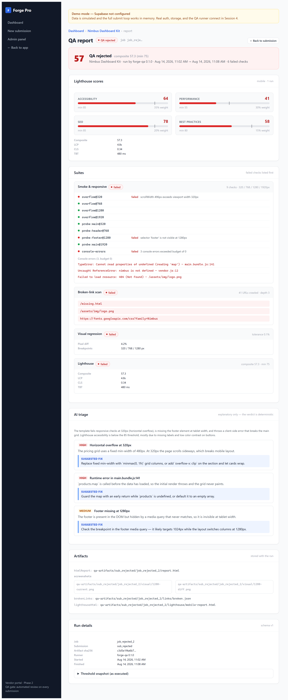

The vendor portal as a native Windows application. Submit templates and components, watch the automated QA gate pass or reject them, fix and resubmit, and take a listing from deployment to sale — all in demo mode, with no server, database, or internet required.
Forge Pro is an AI-native marketplace for website templates and UI components. Its defining feature is the automated QA gate: every vendor submission is tested by a real browser before it can go live — responsive checks, a broken-link crawl, visual regression, and Lighthouse performance/accessibility scores.
This desktop app wraps the vendor portal in a native Windows window. It runs the portal's real production build in demo mode: the data lives in a small file on your computer instead of a database, and the QA runner is simulated with one click. Everything you do works exactly the way it will in the live marketplace — that is the point of the demo.
Forge Pro-Setup-0.1.0.exe.Program Files is fine) and finish the wizard.pnpm desktop:dev stages the runtime and launches the shell without installing anything. pnpm desktop:package rebuilds the installer.On launch, the app starts its bundled server, waits until the portal answers, and opens the Vendor Dashboard. A banner reminds you that data is simulated. The portal lives at http://127.0.0.1:4310/vendor — you can also open that address in a normal browser.
%APPDATA%\Forge Pro\demo-store\%APPDATA%\Forge Pro\Everything you create (drafts, submissions, admin actions) is saved there and survives restarts. Deleting the demo-store folder resets the app to its factory demo data — see §10.
/vendor)This is your home screen. It lists every submission with a status chip, a QA score column (the composite from the latest report), and the key actions:
| Status chip | Meaning | What you can do |
|---|---|---|
| draft | Started but not submitted | Open the form and continue |
| submitted / running | In the QA queue | View; simulate the runner (demo) |
| qa_passed | Passed the gate | View report |
| qa_rejected | Failed the gate | View report → fix → resubmit |
| published | Live with the QA Verified badge | View |
| withdrawn | Pulled by you | View |
| unpublished | Removed by an admin | View |

/vendor/new)A three-step wizard — catalog details, preview & ownership, artifact & version. §4 walks through it in full.
/vendor/submissions/{id})Each submission has its own page: the catalog info you entered, the preview URL, the artifact hash, the job's progress, and — in demo mode — the Simulate pass / Simulate reject buttons that stand in for the QA runner.
/vendor/submissions/{id}/report/{jobId})The full QA report: overall verdict, composite score, per-category score bars (performance, SEO, accessibility, best practices), the four suites' results, and failed checks with details. §5 covers reading it.
/admin/vendors — vendor applications with Approve / Revoke./admin/submissions — every submission in the marketplace with Unpublish.

We'll ship a landing-page template called "Aurora Landing Page" — the exact scenario a real vendor runs every day.
Before you submit, deploy the template somewhere reachable — your own host, a static host, or localhost during development. The QA gate tests this URL, so it must be the real, working site.

Aurora Landing Page.Astro, Next.js, React, … (a suggestion list helps).landing-page, dashboard, forms, …Tailwind, TypeScript (type, then Enter or comma).129 USD.Because the QA gate spends real CI minutes on your preview URL, Forge Pro requires proof you control it.
https (or localhost/127.0.0.1 during development).<head> of your preview page, then deploy:
<meta name="forge-pro:verify" content="<your-token>" />http://localhost:3000 while you build, add the token, and verify — no hosting needed to try the full loop..zip. Constraints: real zip (PK magic bytes), max 50 MB. The app hashes it with SHA-256 and shows the size + hash preview.1.0.0.You land on the submission page. The status chip moves to submitted with a queued/running job — just like a real submission waiting for the runner. In demo mode the page shows the Simulate pass / Simulate reject controls that stand in for the runner.

Open a submission and click into its report. This is the exact report contract the live runner produces — the same score bars, the same thresholds, the same layout your customers will see attached to a live listing.
One of three outcomes:
Four Lighthouse categories, each with a minimum threshold and a weighted composite (the number in the dashboard's score column):
| Category | Default minimum | Weight | What it measures |
|---|---|---|---|
| Performance | 55 | 30% | Load speed, LCP, CLS, TBT |
| SEO | 85 | 20% | Crawlability, meta, mobile-friendliness |
| Accessibility | 85 | 35% | Contrast, labels, keyboard, ARIA |
| Best Practices | 80 | 15% | HTTPS, console errors, modern APIs |
A pass requires every category at or above its minimum and the composite at or above 75. One weak category can sink the composite even when the others are strong — the report shows the math.
A rejected report lists every failed check with a precise detail — e.g. "scrollWidth 496px exceeds viewport width 320px" or "No visible element matching 'footer'". Rejected reports also include an AI narrative: a plain-language summary plus triaged issues, each with a suggested fix. It explains, it never decides — the verdict is the math.

Rejections are the gate working as intended — and they're routine. Here is the loop, using the dashboard kit "Nimbus Dashboard Kit" from the demo data as the example.
The demo kit's report shows: horizontal overflow at 320px (a grid with a fixed min-width), a footer hidden by a media query at tablet width, a client-side error (products.map is not defined), 2 broken links, and accessibility below 85. Each item maps to a concrete fix:
minmax(0, 1fr) grid columns (or overflow-x: clip) — kills the 320px overflow.[]).1.1.0.submittedVersion and the artifact's SHA-256. A verdict is only meaningful for the exact artifact tested — resubmitting with a bumped version keeps the audit trail honest.You can withdraw a draft, a submitted item still in the queue, or a rejected item you'd rather shelve than fix. Withdrawn items keep their history but leave the marketplace flow.
Switch hats and visit the admin area — the marketplace operator's side of the window.
/admin/vendors)New vendors apply with a bio, website, and role. Review the application and click:
The demo data ships with two pending applications (Maya Chen, Jon Rivers) and one approved vendor (Diego Souza) so you can approve, revoke, and re-approve freely.
/admin/submissions)Every submission in the marketplace, with vendor names and statuses. Click Unpublish on any live item to take it down. The item immediately shows the unpublished tag on the vendor dashboard and disappears from the live catalog.
/admin/vendors; their submissions appear in your admin list./admin/submissions.| Step | In the desktop demo | In the live marketplace |
|---|---|---|
| Submit | Same form, same validation | Same form; real storage + zip hashing server-side |
| QA | "Simulate pass/reject" buttons | A real runner claims the job, runs the suites in a browser, posts the report back |
| Report | Real report contract with demo numbers | Real numbers from the real run |
| Publish | Status advances in the demo store | Auto-publish writes the Sanity doc, sets the badge, moves the zip to storage |
| Sale | Price displayed on the listing | Stripe checkout, licenses, subscriptions |
%APPDATA%\Forge Pro\demo-store.| Symptom | Cause / fix |
|---|---|
| SmartScreen warning on install | Installer is not code-signed. Click More info → Run anyway. A signed build removes this (see below). |
| "The portal runtime is missing" dialog | The bundled runtime wasn't staged. In a dev checkout, run pnpm desktop:prepare then relaunch. |
| "Could not start the portal" / port busy | Another instance or app holds port 4310. Set FORGE_PORT to a free port before launching (the app reads it from the environment). |
| Second launch opens but no new window | Single-instance lock: the first window is focused instead — by design. |
| Dashboard looks empty | The demo store was reset or is from an old format; relaunch once or delete demo-store to reseed. |
| Simulate buttons missing | Simulation only appears for submitted items with a queued job — and only in demo mode. |
win.icon), sign the installer with a code-signing certificate to remove the SmartScreen warning, and rebuild with pnpm desktop:package. The build is fully reproducible from the Forge Pro repo.| Where | URL | What it's for |
|---|---|---|
| Vendor dashboard | /vendor | All your submissions, statuses, scores |
| New submission | /vendor/new | The 3-step wizard |
| Submission detail | /vendor/submissions/{id} | Info, job state, simulate buttons |
| QA report | /vendor/submissions/{id}/report/{jobId} | Full report + failed checks |
| Admin — vendors | /admin/vendors | Approve / revoke applications |
| Admin — submissions | /admin/submissions | All submissions + unpublish |
https (or localhost).forge-pro:verify meta tag must be present on the preview page.| Command | What it does |
|---|---|
pnpm desktop:dev | Stage the runtime and launch the shell |
pnpm desktop:prepare | Rebuild + restage the runtime after app changes |
pnpm desktop:package | Build the Windows installer (NSIS, x64) |
FORGE_PORT=4310 pnpm desktop:dev | Run on a specific port |